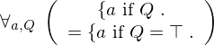
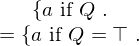
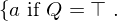

Axiom condition__as__condition_eq_true of type Forall¶
from the theory of proveit.core_expr_types.conditionals¶
see dependencies
In [1]:
import proveit
# Automation is not needed when only building an expression:
proveit.defaults.automation = False # This will speed things up.
proveit.defaults.inline_pngs = False # Makes files smaller.
%load_axiom_expr # Load the stored axiom expression as 'stored_expr'
# import the special expression
from proveit.core_expr_types.conditionals import condition__as__condition_eq_true
In [2]:
# check that the built expression is the same as the stored expression
assert condition__as__condition_eq_true.expr == stored_expr
assert condition__as__condition_eq_true.expr._style_id == stored_expr._style_id
print("Passed sanity check: condition__as__condition_eq_true matches stored_expr")
In [3]:
# Show the LaTeX representation of the expression for convenience if you need it.
print(condition__as__condition_eq_true.latex())
In [4]:
# display the expression information
condition__as__condition_eq_true.expr_info()
Out[4]:
| core type | sub-expressions | expression | |
|---|---|---|---|
| 0 | Operation | operator: 1 operand: 2 |  |
| 1 | Literal |  | |
| 2 | Lambda | parameters: 3 body: 4 |  |
| 3 | ExprTuple | 8, 12 |  |
| 4 | Operation | operator: 10 operands: 5 |  |
| 5 | ExprTuple | 6, 7 |  |
| 6 | Conditional | value: 8 condition: 12 |  |
| 7 | Conditional | value: 8 condition: 9 |  |
| 8 | Variable |  | |
| 9 | Operation | operator: 10 operands: 11 |  |
| 10 | Literal |  | |
| 11 | ExprTuple | 12, 13 |  |
| 12 | Variable |  | |
| 13 | Literal |  |